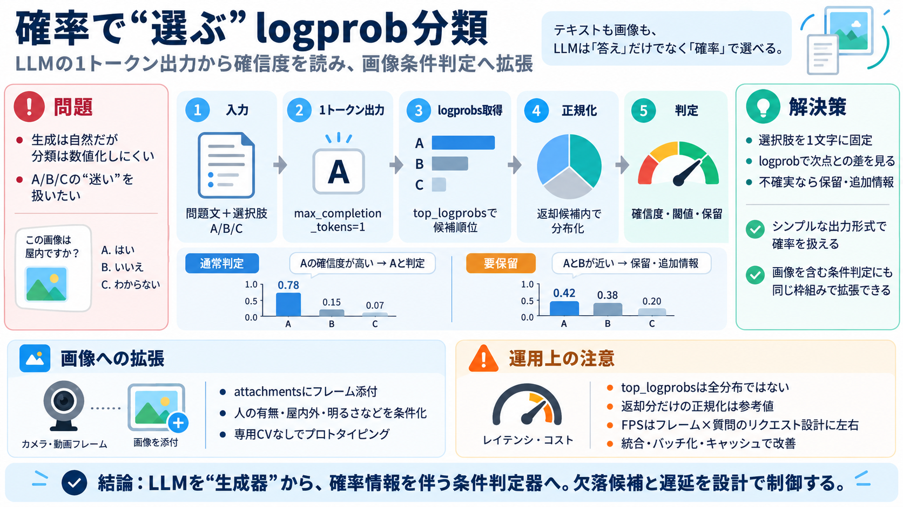

Gemma 4 Technical Report
| | | | | | | --- --- --- | | | Gemma 4 | | | | | | 31B | 26B-A4B | 12B | E4B | E2B | | MMMU Pro | 75.8 | 73.2…

LLMに“生成”ではなく“選択肢の確信度”を出させ、さらに画像モデルへ拡張して条件判定に使います。（classification with logprob対数確率）
文章生成は自然ですが、「A/B/Cのどれが正しいか」と「どれくらい確信があるか」を数値で扱いにくいことがあります。
最適ラベルを「1トークン」で出させ、そのトークンの代替候補（順位付き）から確率っぽい“傾き”を復元します。
選択肢を「A/B/C」のような1文字に固定し、max_completion_tokens=1生成を1トークンで停止にします。
返ってきた各候補のlog確率を指数化し、返却された候補集合の中で正規化して重み（確率っぽい分布）にします。
top_logprobsにより「次点がどれくらいあり得るか」を数値で取り出せるので、閾値判定や“保留”設計がしやすくなります。
Jevのリクエスト形式に画像（attachments）を追加し、Webカメラのフレームをbase64で送って毎フレーム判定します。
APIの形が違っても、logprobs取得・上位候補の扱い・レスポンス整形の工夫で同一の判定パイプラインに寄せられます。
既存LLMの“確率付き推論”として使うため、ラベル設計とプロンプト（選択肢と条件）だけで挙動を作れます。
計測例ではローカルGemma 4 12Bで約1 FPS、OpenAI側で約0.2 FPS。ボトルネックはフレーム×質問ごとの接続/リクエストコストです。
top_logprobsは上位候補の一部しか返さないため、全分布を復元できる保証はありません。返却分だけで正規化すると、解釈が歪む可能性があります。
本番で使うなら、欠落候補の影響、性能のばらつき、リクエスト統合、さらに確率の校正（どれくらい当たるか）を検証すべきです。
目的は「柔軟な条件×確率付き判定」。一方で、top_logprobsの欠落と通信コストがボトルネックになり得ます。
LLMを“生成”ではなく“確率情報を伴う条件判定器”として使い、画像にも同様の枠組みを適用できる。あとは欠落と遅延を設計で制御すれば、実用に近づきます。
| | | | | | | --- --- --- | | | Gemma 4 | | | | | | 31B | 26B-A4B | 12B | E4B | E2B | | MMMU Pro | 75.8 | 73.2…
Gemma 4 12B delivers performance nearing our larger 26B MoE model on standard benchmarks, but at less than half the tota…
AUG. 17, 2026 [...] Vision embedder (35M parameters): Replaces the 27 vision transformer layers of the other medium-size…
These aren’t novel techniques — most have been used individually in other models — but the combination is what allows Ge…
Gemma 4 models are available in 5 parameter sizes: E2B, E4B, 12B, 31B and 26B A4B. The models can be used with their def…